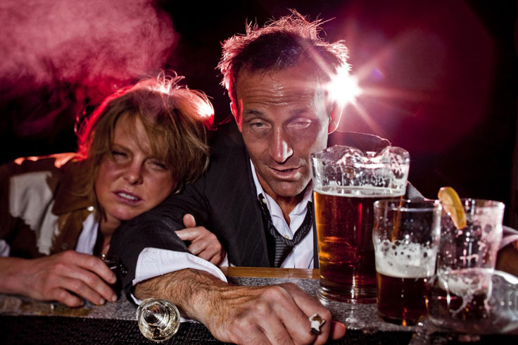

Ein plötzlicher Schwarm wurde zu einer ebenso plötzlichen Katastrophe. Alkohol war der Übeltäter. In vino veritas, sagten die Römer. Das bedeutet: Die Wahrheit liegt im Wein. Ich habe mein Unglück im Wein gefunden. Alles, was ich jetzt tun kann, ist, mich an diese Geschichte zu erinnern, sie Ihnen zu erzählen und Schlussfolgerungen zu ziehen. Und Gott zu danken, dass ich ein Heilmittel finden und dem Griff der grünen Schlange entkommen konnte.
Ich erinnere mich an unseren vorletzten Abend. Meine Liebste lag neben mir, kuschelte sich an mich, und ich wollte entkommen. Da hatte ich schon beschlossen, dass es zwischen uns vorbei war. Es war eine weitere betrunkene Nacht. Wie immer hatten wir alles durcheinander gemischt: Es gab teuren Cognac, roten unbekannter Herkunft und billigen Wermut. Alles zusammen bildete einen ekelhaften Geruch von übermäßigem Alkoholkonsum, der die Luft im Raum und unsere Beziehung vergiftete.

Wir haben uns zufällig kennengelernt - in der Silvesternacht. Ich habe immer an Neujahrswunder geglaubt und es als gutes Omen gesehen. Ich konnte mir nicht vorstellen, dass das Schicksal mir ein Schwein in Form von drohendem Alkoholismus unter den Baum legen würde.
Die Einsamkeit war inzwischen chronisch geworden. Ich hatte mich komplett in die Arbeit gestürzt, und mein Leben hatte sich in einen Murmeltiertag verwandelt - Home-Office-Home, unterbrochen von monatlichen Geschäftsreisen in andere Städte. Das Ganze glich einem endlosen Kreislauf von Härtetests, bei denen mir als Mann, ja als Mensch, einfach nur der letzte Tropfen Sorgfalt fehlte.
Eine frühere Beziehung dauerte ein paar Jahre, endete aber in einer Trennung. Ich habe damals meine Liebe begraben, mich nie wieder erinnert und getrauert. Ich lebte weiter den üblichen Rhythmus, bis ich auf einer Party eine langbeinige lächelnde Brünette traf. Ihr Name war Ljuba, und sie war drei Jahre älter als ich, was mein Interesse weiter anheizte. Wir kamen sofort ins Gespräch und es zeigte sich eine gegenseitige Sympathie. Innerhalb von ein paar Monaten lebten wir bereits zusammen.
Am Anfang habe ich ihren Vorlieben nicht viel Aufmerksamkeit geschenkt. Unsere Spaziergänge wurden immer vom Biertrinken in einer abgelegenen Ecke des Parks begleitet. Sie trank drei Dosen, eine nach der anderen. Ich trank mit ihr, auf gleicher Ebene. Und es erschien mir völlig normal - so mutig ist die Anfangsphase einer Beziehung.

Als wir anfingen, zusammenzuleben, hörte der Alkoholtrip nicht auf. Der Murmeltiertag ging weiter, aber auf eine neue Art und Weise: Jeden Abend hörte man die folgenden Sätze: Schatz, bitte kaufe etwas Wein. Rot; Schatz, vielleicht ein Bier? Schatz, bring etwas Starkes mit.
Die Abende verbrachten wir ausnahmslos mit einem Schnaps oder einem Glas, und die Morgen waren immer unfreundlich: Kopfschmerzen, Übelkeit, Gedächtnislücken wurden dann meine Begleiter. Eine Handvoll Pillen gegen Kopfschmerzen, Übelkeit und Hubschrauber rettete mich nicht vor den Qualen der Scham und Schuldgefühle. Ich löschte sie mit der nächsten Portion Alkohol. Und mein Begleiter hat gerade einen schlimmen Kater heruntergetuckert.
Тази ситуация силно ми пречеше. В главата ми се бореха две противоположни мнения – «трябва да поговорим» и «майната му, ще мине, това е временно». Аз избрах първото. Как започнах вече не помня, но май беше така:
- Miri, lass uns weniger trinken, ja? - sagte ich.
Was folgte, war ein großer Skandal. Ich bin noch nie in meinem Leben als Alkoholikerin bezeichnet worden!, brüllte Miriam und stampfte mit den Füßen. Obwohl ich ein solches Wort gar nicht ausgesprochen habe. Sie weigerte sich, einen Kompromiss einzugehen, mit dem Argument, dass: Ich bin erwachsen, und wie jeder Erwachsene habe ich meine Bedürfnisse. Ich habe das Recht, mir zu erlauben, mich zu entspannen, wie ich es für richtig halte. Ehrlich gesagt, hätte ich zu diesem Zeitpunkt schon packen und gehen sollen. Aber sich zu trennen ist immer schwieriger als wieder zusammen zu kommen. Ich habe noch ein paar Mal versucht, ähnliche Gespräche zu führen, aber sie führten immer zu Streit.
Wie kann ich ohne Alkohol mit dir leben? Es gibt nicht einmal etwas, worüber man mit dir reden könnte, sagte sie mit einem Glas in der Hand

Sie hingegen hatte eine Menge zu erzählen. Und alle ihre Geschichten begannen mehr oder weniger gleich: Anna und ich haben Bier gekauft... Wir sitzen in einem Café und trinken Wein...Wir kamen an den Strand, und uns wurde eingeschenkt...
Und ich habe mitgemacht. Ich trank, schüttete literweise Alkohol in mich hinein, ich fand auch eine Art Ventil am Ende eines harten Arbeitstages. Ohne darauf zu achten, dass es der Kater war, der es zu einem harten Arbeitstag machte.
Etwa ein Jahr verging in diesem Rhythmus, der mir in Fetzen widerlicher Erinnerungen im Gedächtnis blieb. Alles andere wurde durch den Alkohol ausgelöscht.
Die Erkenntnis kam plötzlich, ebenso wie diese lächerliche Schwärmerei. Und das geschah am Samstagmorgen, gegen fünf Uhr, als ich mit einem schrecklichen Kater aufwachte, der mich wieder wach hielt. Ich habe höchstens drei oder vier Stunden geschlafen. Mein ganzer Körper schmerzte, die Welt schien ekelhaft feindselig, und ich war ein fieser kleiner Säufer. Der Ort war schmutzig, die Dinge lagen verstreut herum. In der Luft hing eine dicke Wolke mit starkem Geruch nach Trunkenheit. Und eine faltige, zottelige Frau schlief mit dem Make-up von gestern, das über ihr geschwollenes Gesicht verschmiert war, und atmete stinkende Dämpfe aus.
Und in diesem Moment kam die klare Erkenntnis, dass das aufhören muss. Aber meine Hand griff schon nach einer Dose Bier, weil der Zustand es verlangte. Miri wachte auf und folgte meinem Beispiel.
Wir hatten für heute Abend ein Treffen mit Freunden geplant. Nun, wie könnten wir ohne einen Drink auskommen? Eigentlich hatten wir zu diesem Zeitpunkt schon den ganzen Tag getrunken. Ein Bier am Morgen, gefolgt von einem weiteren, und so weiter bis in den Abend hinein. Und am Abend kam die schwere Artillerie.

Ich habe Miriam gesagt, dass ich versuchen will, geheilt zu werden. Sie gab mir das übliche Argument: Du hast keine Alkoholiker gesehen; Ich trinke in Maßen; Wir sind erwachsen und entscheiden selbst, wie wir leben
Du bist selbst Alkoholiker, also behandle dich selbst. Ich brauche es nicht, meinte sie abschließend.
Von meinem alten Schwarm war keine Spur mehr übrig. Innerlich war alles zerbrochen: der Wunsch zu lieben, und die Hoffnung für die Zukunft, und der Glaube an das Wunder. Miriam hat mich genervt, und ich habe sie gebeten, die Wohnung zu verlassen und aus meinem Leben zu verschwinden.
Es gab Tränen, Schreie, Hysteriker, die sich zu meinen Füßen wälzten, aber mir war der ganze Auftritt gleichgültig. Die Schreie der betrunkenen Frau sahen abstoßend aus, und das Einzige, was ich wollte, war, allein zu sein, und zwar so schnell wie möglich. Nicht ohne Schwierigkeiten, aber ich habe Miri überredet, zu ihrer Mutter zu gehen. Für immer.
Ich habe alleine weiter getrunken. Vier Monate lang trank ich jeden Tag, obwohl ich mir immer wieder versprach heute ist das letzte Mal. Mir wurde klar, dass ich es nicht alleine schaffen kann.
Und dann wurde ich eines Sonntags gegen vier Uhr morgens von einem Kater geweckt. Die Stimmung war so schlecht, dass der Durchfall und das Erbrechen wie Blumen wirkten. Ich konnte mich erholen, und mit zitternden Händen nahm ich mein Handy in die Hand und tippte in die Google-Suchleiste: Wie man mit dem Trinken aufhört. Nachdem ich ein paar Links durchgeblättert hatte, stieß ich auf die Seite . Es hieß, dass dieses Mittel helfen würde, in kürzester Zeit mit dem Trinken aufzuhören. Und sein Vorteil ist, dass es ausschließlich aus natürlichen Inhaltsstoffen besteht, sich positiv auf den gesamten Körper auswirkt und die durch Alkohol geschädigten Organe wiederherstellt.

Was soll's, dachte ich, und bestellte mehrere Packungen dieses Mittels. Der Berater rief mich zurück und ich bestätigte meine Bestellung.
Bis das Paket mit ankam, habe ich immer wieder in mich reingeschüttet. Und als ich das Medikament erhielt, begann ich sofort mit der Einnahme. Die ersten paar Tage waren sehr schwierig... das Verlangen nach Alkohol war immer noch stark, aber ich habe versucht, durchzuhalten. Obwohl ich ein paar Ausrutscher hatte.
Und nach einer Woche war es so, als hätte ich losgelassen. Die psychische Abhängigkeit vom Schnaps war weg. Ich war nicht länger ein Sklave der Flasche, die Abende waren nicht mehr mit Alkohol und die Morgen nicht mehr mit Schmerzen und Übelkeit verbunden. Aber, wie die Anleitung für sagt, ist dies nur die erste Stufe der Behandlung. Das Medikament sollte nie abgesetzt werden, also habe ich es wie angewiesen weiter eingenommen.
Nach und nach verschwanden meine alkoholkranken Freunde aus meinem Leben. Wir hatten einfach nichts anderes, weswegen wir Freunde sein konnten. Ich habe meine Aufmerksamkeit auf Kumpels mit anderen Interessen gelenkt.
Seitdem sind 1,5 Jahre vergangen, und mein Leben hat sich dramatisch verändert. Ich habe ein neues, anständiges Mädchen gefunden, mit dem wir abends Filme schauen, zusammen kochen, spazieren gehen, ins Kino gehen - im Allgemeinen haben wir eine tolle Zeit. Und dieser Albtraum liegt hinter uns ... wie ein schlechter Traum.
Ich habe mich entschlossen, diese Geschichte zu teilen, weil ich denke, dass meine Erfahrung für andere Menschen, die zum Alkoholmissbrauch neigen, nützlich sein kann. ist das, was mich aus dem Tiefpunkt des Lebens herausgezogen hat und mich vor dem Sterben bewahrt hat. Leute, hört auf! Bringen Sie sich nicht um. Das Leben ist schön, und um seine Schönheit zu sehen, müssen Sie Ihre destruktiven Gewohnheiten aufgeben. Und manchmal auch die Menschen loswerden, die destruktiv für Sie sind.
Unten hinterlasse ich einen Link zu . Übrigens, dort läuft gerade eine Aktion. Beeilt euch.